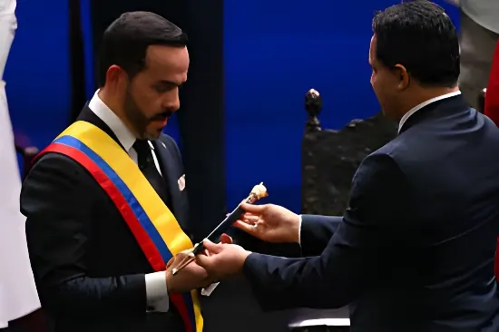

Le 7 août 2026, Abelardo de la Espriella a prêté serment comme président de la République de Colombie pour la période 2026-2030, lors d'une cérémonie organisée pour la première fois hors de Bogotá, à Cali. Entourée d'un dispositif de sécurité massif et d'une scène internationale exceptionnelle, cette investiture ouvre un mandat placé sous le signe de la rupture avec l'héritage de Gustavo Petro.
Pour la première fois depuis la création de la République, un président constitutionnel colombien a pris ses fonctions dans une ville autre que Bogotá. Abelardo de la Espriella a prêté serment à 15h00 (heure locale) devant le Congrès réuni en session solennelle, non pas dans le traditionnel Salon elliptique du Capitole national, mais dans l'auditorium Arena USC de l'Université Santiago de Cali. L'équipe de transition du président élu avait sollicité ce changement de lieu auprès du Sénat dès le 16 juillet ; la Chambre des représentants l'a approuvé le 28 juillet par 117 voix contre 7, suivie par le Sénat le lendemain par 58 voix contre 30.
Le nouveau chef de l'État justifie ce choix par une volonté de décentralisation et d'hommage aux territoires les plus touchés par la violence armée : il avait initialement souhaité que la cérémonie se tienne dans une garnison militaire de Popayán, dans le Cauca voisin, pour rendre hommage à ce qu'il appelle « les véritables héros de la patrie », les forces armées.
Rompant avec le protocole habituel, De la Espriella a prononcé son premier discours de chef d'État non pas devant le Congrès mais devant les forces militaires, au Cantón Militar Pichincha de Cali. Il y a annoncé les grandes lignes de son mandat : reprise en main de l'ordre public, publication d'une liste officielle de groupes qualifiés de « narcoterroristes », construction de mégaprisons pour y interner les criminels, et fin de la politique de paz total engagée par son prédécesseur.
Sur le plan économique, le nouveau président a annoncé vouloir supprimer l'impôt sur le patrimoine et autoriser, sous conditions techniques et environnementales strictes, le développement de la fracturation hydraulique (fracking), présentée comme un levier de sécurité énergétique. En matière de politique étrangère, il a promis de rechercher des « alliances stratégiques » avec les pays partageant les valeurs de son gouvernement et de faire de la Colombie une voix de condamnation des régimes autoritaires.
Après son investiture, De la Espriella a installé, lors d'une cérémonie à huis clos au Batallón Pichincha, les 18 membres de son premier gouvernement — neuf femmes et neuf hommes, conformément à la loi colombienne sur la parité. Le vice-président José Manuel Restrepo, économiste et ancien ministre des Finances, a salué sur les réseaux sociaux « le cabinet de la Patria Milagro ». Le même jour, le président a également signé le décret nommant Andrés Barreto, ancien collaborateur de son propre cabinet d'avocats, au poste de secrétaire juridique de la Présidence.
La cérémonie s'est ouverte en l'absence remarquée du président sortant, Gustavo Petro, qui ne s'est pas rendu à Cali. Quelques heures plus tôt, il avait fait ses adieux à la présidence lors d'une allocution séparée, dans laquelle il a dit vouloir respecter la volonté exprimée par les électeurs colombiens. Le parti Pacto Histórico, dont est issu le candidat battu Iván Cepeda, était lui aussi absent de la cérémonie officielle.
La passation de pouvoir s'est déroulée sous un dispositif de sécurité considérable. Dans les jours ayant précédé l'investiture, un attentat à l'explosif a fait plusieurs blessés à Cúcuta, à la frontière vénézuélienne, et au moins treize attaques contre la force publique et des infrastructures étatiques ont été recensées entre le 7 et le 8 août à travers le pays. La police métropolitaine de Cali a toutefois assuré que la ville était restée calme et qu'aucune nouvelle menace n'avait été reçue le jour de la cérémonie.
Second tour de l'élection présidentielle : Abelardo de la Espriella l'emporte face à Iván Cepeda (Pacto Histórico).
L'équipe de transition consulte le Sénat sur la procédure de transfert de la cérémonie d'investiture hors du Capitole national.
La Chambre des représentants approuve le transfert de la cérémonie à Cali (117 voix pour, 7 contre).
Le Sénat approuve à son tour la mesure (58 voix pour, 30 contre).
Investiture à Cali : De la Espriella prête serment, installe son gouvernement de 18 ministres et prononce son premier discours devant les forces armées.
La cérémonie a réuni un parterre inhabituel de personnalités étrangères : le roi Felipe VI d'Espagne, venu rencontrer le président élu avant la prestation de serment, ainsi qu'au moins huit chefs d'État latino-américains, parmi lesquels le président argentin Javier Milei, l'équatorien Daniel Noboa et le panaméen José Raúl Mulino. Quatre anciens présidents colombiens — César Gaviria, Andrés Pastrana, Álvaro Uribe et Iván Duque — ont également fait le déplacement, un signe de continuité avec les gouvernements de centre et de droite qui ont précédé celui de Petro.
Aux États-Unis, plusieurs élus républicains, dont le président de la commission des Affaires étrangères du Sénat Jim Risch, ont adressé leurs félicitations au nouveau président. De la Espriella a par ailleurs indiqué vouloir rallier son pays au dispositif de coopération antidrogue dit « Escudo de las Américas », lancé en marge d'un sommet régional organisé par Washington en mars 2026.
« Le temps de l'ordre a commencé. »
— Abelardo de la Espriella, premier discours présidentiel, Cantón Militar Pichincha, Cali, 7 août 2026En choisissant de s'adresser d'abord aux militaires plutôt qu'au Congrès, et en plaçant la sécurité, la fin de la paz total et le rapprochement avec les administrations conservatrices de la région au cœur de son premier message, Abelardo de la Espriella affiche d'emblée une rupture nette avec les quatre années Petro. L'absence du président sortant à la cérémonie et la tension sécuritaire qui a entouré la passation de pouvoir laissent présager un début de mandat sous surveillance, entre volonté d'affirmation internationale et défis intérieurs immédiats — narcotrafic, groupes armés et polarisation politique persistante.
El 7 de agosto de 2026, Abelardo de la Espriella juró como presidente de la República de Colombia para el período 2026-2030, en una ceremonia celebrada por primera vez fuera de Bogotá, en Cali. Rodeada de un fuerte dispositivo de seguridad y de una escena internacional excepcional, esta investidura abre un mandato marcado por la ruptura con el legado de Gustavo Petro.
Por primera vez desde la creación de la República, un presidente constitucional colombiano asumió el cargo en una ciudad distinta a Bogotá. Abelardo de la Espriella prestó juramento hacia las 15:00 (hora local) ante el Congreso reunido en sesión solemne, no en el tradicional Salón Elíptico del Capitolio Nacional, sino en el auditorio Arena USC de la Universidad Santiago de Cali. El equipo de empalme del presidente electo consultó al Senado sobre este cambio de sede desde el 16 de julio; la Cámara de Representantes lo aprobó el 28 de julio con 117 votos a favor y 7 en contra, y el Senado hizo lo propio al día siguiente con 58 votos a favor y 30 en contra.
El nuevo mandatario justificó esta decisión con una voluntad de descentralización y de homenaje a los territorios más golpeados por la violencia armada: inicialmente había querido que la ceremonia se realizara en una guarnición militar de Popayán, en el vecino Cauca, para rendir tributo a quienes llama «los verdaderos héroes de la patria», las fuerzas militares.
Rompiendo con el protocolo habitual, De la Espriella pronunció su primer discurso como jefe de Estado no ante el Congreso, sino ante las fuerzas militares, en el Cantón Militar Pichincha de Cali. Allí anunció los grandes ejes de su gobierno: recuperación del orden público, publicación de un listado oficial de grupos calificados como «narcoterroristas», construcción de megacárceles para recluir a los criminales, y el fin de la política de paz total impulsada por su predecesor.
En materia económica, el nuevo presidente anunció que buscará eliminar el impuesto al patrimonio y autorizar, bajo estrictos estándares técnicos y ambientales, el desarrollo del fracking, presentado como una herramienta de seguridad energética. En política exterior, prometió buscar «alianzas estratégicas» con países que compartan los valores de su gobierno y convertir a Colombia en una voz de condena frente a los regímenes autoritarios.
Tras la investidura, De la Espriella posesionó, en una ceremonia a puerta cerrada en el Batallón Pichincha, a los 18 integrantes de su primer gabinete —nueve mujeres y nueve hombres, en cumplimiento de la ley colombiana de cuotas de género—. El vicepresidente José Manuel Restrepo, economista y exministro de Hacienda, saludó en redes sociales «al gabinete de la Patria Milagro». Ese mismo día, el presidente firmó también el decreto que nombra a Andrés Barreto, antiguo colaborador de su propia firma de abogados, como secretario jurídico de la Presidencia.
La ceremonia se inició con la notable ausencia del presidente saliente, Gustavo Petro, quien no viajó a Cali. Horas antes, se había despedido de la Presidencia en un discurso separado, en el que afirmó su voluntad de respetar la decisión expresada por los electores colombianos. El Pacto Histórico, partido del candidato derrotado Iván Cepeda, tampoco estuvo presente en el acto oficial.
La transmisión de mando se desarrolló bajo un dispositivo de seguridad considerable. En los días previos a la investidura, un atentado con explosivos dejó varios heridos en Cúcuta, en la frontera con Venezuela, y se registraron al menos trece ataques contra la Fuerza Pública e infraestructura estatal entre el 7 y el 8 de agosto en distintas zonas del país. Pese a ello, la Policía Metropolitana de Cali aseguró que la ciudad permaneció tranquila y que no se recibieron nuevas amenazas el día de la ceremonia.
Segunda vuelta presidencial: Abelardo de la Espriella se impone frente a Iván Cepeda (Pacto Histórico).
El equipo de empalme consulta al Senado sobre el procedimiento para trasladar la ceremonia fuera del Capitolio Nacional.
La Cámara de Representantes aprueba el traslado de la ceremonia a Cali (117 votos a favor, 7 en contra).
El Senado aprueba a su vez la medida (58 votos a favor, 30 en contra).
Investidura en Cali: De la Espriella jura como presidente, posesiona a su gabinete de 18 ministros y pronuncia su primer discurso ante las Fuerzas Militares.
La ceremonia reunió a un inusual grupo de personalidades extranjeras: el rey Felipe VI de España, que se reunió con el presidente electo antes del juramento, y al menos ocho jefes de Estado latinoamericanos, entre ellos el argentino Javier Milei, el ecuatoriano Daniel Noboa y el panameño José Raúl Mulino. También asistieron cuatro expresidentes colombianos —César Gaviria, Andrés Pastrana, Álvaro Uribe e Iván Duque—, un gesto de continuidad con los gobiernos de centro y derecha anteriores al de Petro.
En Estados Unidos, varios legisladores republicanos, entre ellos el presidente del Comité de Relaciones Exteriores del Senado, Jim Risch, felicitaron al nuevo mandatario. De la Espriella señaló además que buscará sumar a su país al mecanismo de cooperación antinarcóticos conocido como «Escudo de las Américas», surgido de una cumbre regional convocada por Washington en marzo de 2026.
« Ha comenzado el tiempo del orden. »
— Abelardo de la Espriella, primer discurso presidencial, Cantón Militar Pichincha, Cali, 7 de agosto de 2026Al elegir dirigirse primero a los militares y no al Congreso, y al situar la seguridad, el fin de la paz total y el acercamiento a los gobiernos conservadores de la región en el centro de su primer mensaje, Abelardo de la Espriella marca desde el inicio una ruptura clara con los cuatro años de Petro. La ausencia del presidente saliente en la ceremonia y la tensión de seguridad que rodeó la transmisión de mando anticipan un comienzo de gobierno bajo estrecha vigilancia, entre la voluntad de proyección internacional y los desafíos internos inmediatos: narcotráfico, grupos armados y una polarización política que persiste.